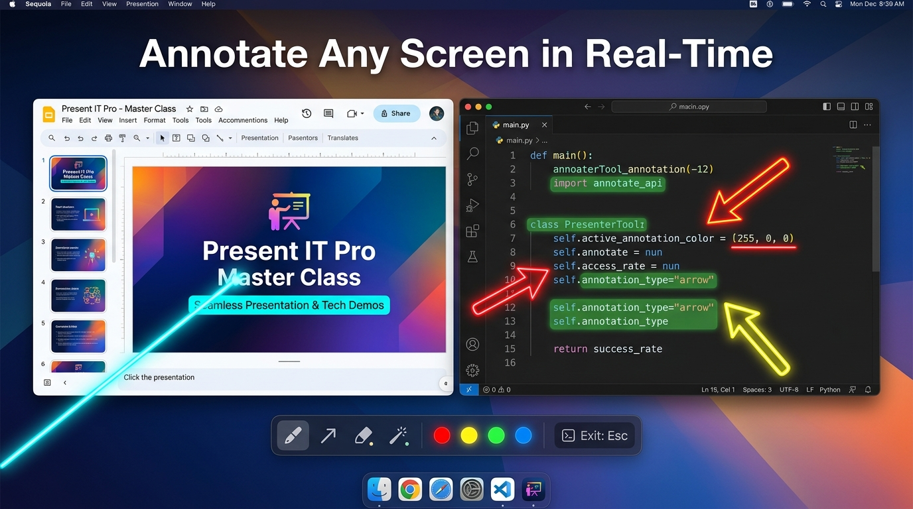
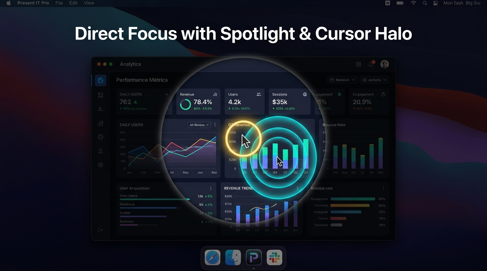
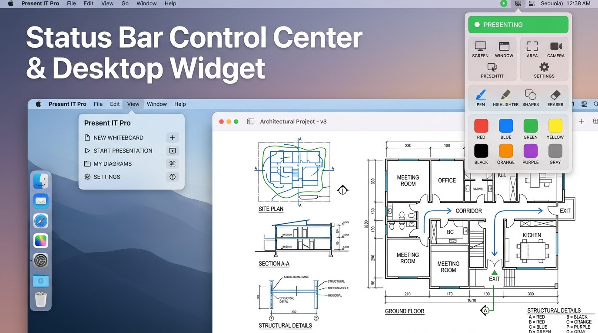
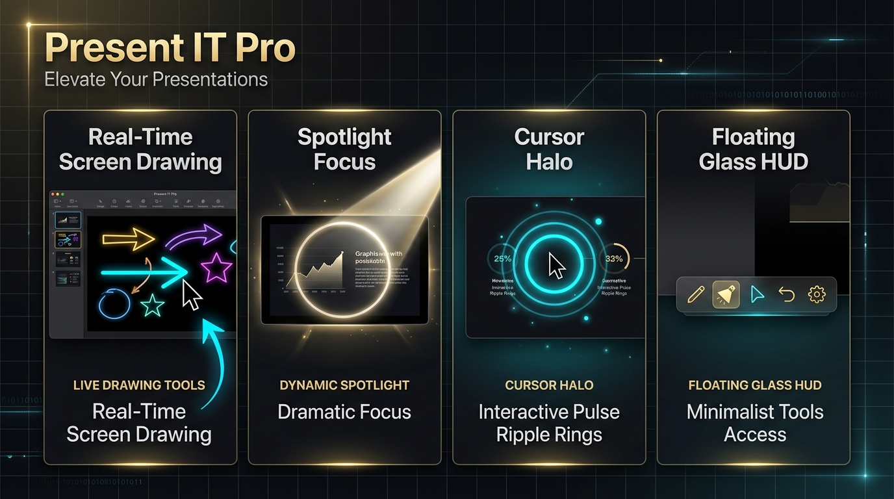

The ultimate presentation companion for macOS. Draw on top of any app, spotlight key information, and guide viewer focus with luminous cursor tracking.
Whether you're teaching a class, recording technical tutorials, or pitching executives, Present IT Pro keeps every eye on your message.
Draw instantly over any window, full-screen video, or desktop surface. Choose from freehand pens, arrows, geometric shapes, stars, and coordinate pins.
Dim background distractions with a cinema overlay and illuminate exactly what matters. Adjust aperture size, edge softness, and dim opacity on the fly.
Never lose your pointer again. Surrounds your mouse cursor with a vivid glowing halo and triggers expanding ripple pulses on every click.
Draggable, Apple-glassmorphic dock that stays above all apps. Collapse down into a sleek 1-click mini-pill whenever you need pure screen real estate.
Instant digital chalkboard or whiteboard. Blank your display at any moment for spontaneous sketching, architecture diagrams, and problem solving.
Keep your presentation moving effortlessly. Enable the smart 3-second auto-erase timer to have your ink fade away smoothly after drawing.
Explore the native macOS experience crafted with SwiftUI.

9 precision drawing tools with instant multi-color swatches and adjustable stroke weights.

Direct viewer attention instantly with adjustable beam lighting and click animations.

Quick-toggle your entire presentation workspace right from macOS Menu Bar or your desktop.

Seamlessly integrate drawing, spotlighting, cursor tracking, and floating HUD controls.
Control your presentation without interrupting your flow.
Instantly freeze or live-annotate your screen. Press Esc at any time to exit drawing mode.
Activate the adjustable cinematic spotlight focus beam around your mouse pointer.
Highlight your cursor pointer with custom colors, radius, and click ripple effects.
Switch between transparent screen overlay, pure whiteboard, or blackout blackboard.
Full multi-level history stack to undo, redo, or press ⌘ K to clear all strokes.
Show or hide the floating glassmorphic toolbar across all active displays.